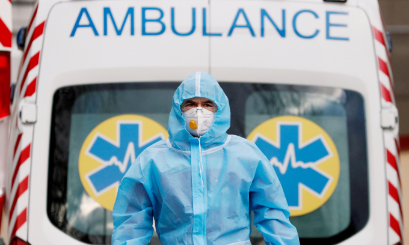

Triển vọng đại dịch kết thúc năm 2022
2022 là năm "cận kề vạch đích" để nhân loại tận dụng tất cả vũ khí sẵn có nhằm chấm dứt đại dịch, biến Covid-19 thành bệnh đặc hữu, theo chuyên gia. "Tất cả đại dịch đều có thời điểm chấm dứt và Covid-19 không phải là ngoại lệ", tiến sĩ Vinod RMT Balasubramaniam, nhà virus học phân tử kiêm giảng viên cấp cao tại Trường Khoa học Y tế và Sức khỏe Jeffrey Cheah thuộc Đại học Monash, Malaysia, chia sẻ với VnExpress về tương lai của đại dịch đã hoành hành toàn cầu suốt hai năm qua. Kể từ khi bùng phát trên thế giới từ đầu năm 2020, Covid-19 đã khiến hơn 300 triệu người nhiễm và cướp đi sinh mạng của gần 5,5 triệu người, trở thành một trong những đại dịch tàn khốc nhất trong lịch sử. Với sự xuất hiện của vaccine, nhiều người lạc quan rằng đại dịch sẽ sớm kết thúc. Tuy nhiên, câu hỏi mà nhiều người quan tâm là khi nào thời điểm đó đến.
 Ảnh: Một điểm tiêm chủng vaccine Covid-19 tại Bệnh viện Nuovo Regina Margherita ở Rome, Italy hồi tháng 12/2021.
Ảnh: Một điểm tiêm chủng vaccine Covid-19 tại Bệnh viện Nuovo Regina Margherita ở Rome, Italy hồi tháng 12/2021.
"Chúng ta đã bỏ lỡ nhiều cơ hội, gián đoạn kết nối với gia đình và người thân yêu suốt hai năm qua. Nếu chúng ta không hành động, 2022 vẫn sẽ lại như hai năm trước, nhưng nó không nhất thiết phải như vậy", Balasubramaniam nhấn mạnh. "Mục tiêu chính là loại bỏ mức độ nghiêm trọng của dịch bệnh để chúng ta sống chung với nó và tôi nghĩ chúng ta đang dần đạt được điều đó". Nhiều quan chức và chuyên gia y tế quốc tế chia sẻ quan điểm này. Tổng giám đốc Tổ chức Y tế Thế giới (WHO) Tedros Adhanom Ghebreyesus nói rằng "2022 phải là năm chấm dứt đại dịch Covid-19", bởi sau hai năm ứng phó, nhân loại đã "hiểu rất rõ virus và có đủ công cụ để chống lại nó". Trong một bài viết gần đây, các bình luận viên của The Economist cũng cho rằng Covid-19 chưa kết thúc, nhưng nó sẽ không còn là căn bệnh chết người vào năm 2023. "Nó vẫn đe dọa hàng tỷ người ở các nước nghèo, nhưng sẽ dần trở thành một dịch bệnh thông thường như bao dịch bệnh khác", bài viết có đoạn. Theo tiến sĩ Balasubramaniam, nhân loại sẽ không thể kết thúc được Covid-19 bằng cách xóa sổ nCoV. "Virus sẽ không bị tiêu diệt, thế giới tới nay mới chỉ xóa sổ được duy nhất bệnh đậu mùa", ông nói. "Tuy nhiên, khả năng miễn dịch toàn cầu sẽ tăng lên khi nhiều người được tiêm chủng hoặc từng nhiễm. Điều này cuối cùng sẽ khiến Covid-19 trở thành bệnh đặc hữu, với mức độ lây truyền ổn định theo mùa và ít đột biến hơn". Kịch bản lý tưởng này chỉ có thể đạt được khi tình trạng bất bình đẳng vaccine toàn cầu được giải quyết, theo Balasubramaniam. Hơn 9,37 tỷ liều vaccine đã được tiêm trên toàn cầu, với 59% dân số đã tiêm ít nhất một mũi. Tại nhiều quốc gia, tỷ lệ này đã dao động ở mức 70-90%, nhưng ở các nước nghèo, chưa tới 9% người dân đã được tiêm ít nhất một liều vaccine, theo Our World in Data. "Không cung cấp đủ vaccine cho các nước nghèo là lựa chọn không khôn ngoan cả về mặt đạo đức, kinh tế và dịch tễ học, bởi nó sẽ khiến đại dịch kéo dài", ông nói. Đại dịch càng kéo dài, virus càng có nhiều cơ hội phát triển, đặc biệt là những người chưa tiêm chủng. "Đột biến là quá trình tiến hóa của virus để thích nghi với vật chủ. Nói cách khác, sự đa dạng di truyền của virus sẽ tăng theo thời gian. Virus luôn biến đổi để tạo ra các bản sao với số lượng lớn và mỗi lần truyền từ người này sang người khác, khả năng virus đột biến là rất cao", tiến sĩ Balasubramaniam cho hay. Omicron là một minh chứng, khi biến chủng này lần đầu được báo cáo tại phía nam châu Phi, khu vực có tỷ lệ tiêm chủng thấp. Kể từ khi được phát hiện vào giữa tháng 11/2021, biến chủng mới đã lan tới hơn 100 quốc gia, vùng lãnh thổ trên thế giới, góp phần tạo nên làn sóng ca nhiễm tăng vọt ở nhiều nơi. "Mỗi khi virus nhân lên trong một người, nó có cơ hội biến đổi và xuất hiện đột biến mới. Nó giống như trò đổ xúc xắc, một quá trình đầy ngẫu nhiên, may rủi. Bạn càng tung nhiều, cơ hội xuất hiện biến chủng mới càng lớn. Nó cơ bản là quả bom hẹn giờ", chuyên gia dịch tễ này nói. Omicron nhanh chóng được Tổ chức Y tế Thế giới (WHO) liệt vào danh sách biến chủng đáng lo ngại khi chứa tới 50 đột biến, phần lớn trong số đó nằm trên protein gai, phần giúp virus xâm nhập tế bào vật chủ. Dữ liệu sơ bộ cho thấy các đột biến này có thể cho phép Omicron dễ dàng lây nhiễm cho những người chưa tiêm chủng và có thể tránh né một phần phản ứng kháng thể, có được nhờ vaccine hoặc hậu nhiễm. Tuy mối đe dọa về biến thể mới vẫn hiện hữu, giới chuyên gia cho rằng vẫn có những tín hiệu lạc quan về tương lai đại dịch. Dù Omicron có thể có khả năng tránh né kháng thể tốt hơn, một số nghiên cứu gần đây cũng chỉ ra rằng nó khó có khả năng tránh né thành công lớp phòng thủ thứ hai của vaccine và miễn dịch tự nhiên, gồm tế bào T và tế bào B. Dữ liệu từ phòng thí nghiệm của Alessandro Sette, nhà nghiên cứu tại Viện Miễn dịch học La Jolla ở Mỹ, và Andrew Redd của Viện Y tế Quốc gia Mỹ (NIH) cho thấy dù Omicron mang nhiều đột biến, hầu hết mảnh protein của chúng đều bị tế bào T nhận diện và có phản ứng mạnh mẽ giống như các biến chủng khác. "Bên cạnh đó, tất cả các loại vaccine đều tạo ra tế bào bộ nhớ B, loại có thể sản sinh lượng kháng thể trung hòa cao nếu phát hiện virus hoặc biến chủng của chúng. Tế bào B một khi được tạo ra sẽ tồn tại lâu dài và điều này được thấy ở tất cả những người đã tiêm chủng", tiến sĩ Balasubramaniam cho biết. Cho đến nay, vaccine vẫn được xem là chìa khóa mở cánh cửa thoát đại dịch, dù khả năng miễn dịch này không giống như "công tác đèn với hai chế độ tắt và bật", mà theo các mức độ bảo vệ khác nhau. Do đó, Balasubramaniam cho rằng các quốc gia trong giai đoạn này vẫn cần đẩy mạnh chiến dịch tiêm chủng để tăng độ phủ vaccine cho dân số. Tuy nhiên, giới chuyên gia cũng thừa nhận rằng vaccine không phải là "cây đũa thần" có thể giúp xóa sổ hoàn toàn Covid-19, nên các biện pháp phòng ngừa bổ sung như đeo khẩu trang hay giãn cách xã hội vẫn cần được tiếp tục duy trì trong năm 2022. "Mặc dù vaccine trong năm qua giúp chúng ta đạt bước tiến rất lớn trong nỗ lực chống lại nguy cơ bệnh nặng và tử vong cho phần lớn dân số, đại dịch vẫn chưa kết thúc và biến chủng mới vẫn còn nhiều điều cần tìm hiểu. Nhưng thực tế là các biện pháp y tế công cộng được sử dụng trong suốt đại dịch vẫn quan trọng và hiệu quả. Chúng ta đừng quên rằng mình đã có vũ khí như khẩu trang và duy trì giãn cách", Balasubramaniam cho hay. Tiêm tăng cường và tăng giải trình tự gene cũng là hai yếu tố quan trọng trong chiến lược đối phó với Covid-19 của mỗi quốc gia trong năm 2022, theo chuyên gia Đại học Monash. Trong khi tiêm tăng cường giúp củng cố hàng rào bảo vệ của cơ thể, tăng cường giải trình tự gene giúp các nhà khoa học có thể nhanh chóng phát hiện và giám sát các biến chủng mới. Ngoài ra, chuyên gia cho rằng mỗi quốc gia cũng cần cải thiện cơ sở hạ tầng y tế và các kế hoạch chuẩn bị khác để ứng phó tốt hơn với Covid-19 và các đại dịch có thể xuất hiện trong tương lai. "Chuẩn bị cho dịch bệnh tiếp theo không phải chỉ bắt đầu khi tình trạng khẩn cấp hiện tại kết thúc, mà là ngay từ bây giờ", ông Balasubramaniam nói. Quá trình này bắt đầu bằng hệ thống giám sát bệnh hô hấp, lực lượng lao động được bảo vệ tốt, chăm sóc lâm sàng sớm, tiếp cận dịch vụ y tế dễ dàng, trang bị tốt thiết bị bảo hộ cá nhân, cũng như tăng khả năng chẩn đoán, điều trị và nghiên cứu vaccine.
Ảnh: Nhân viên y tế mặc đồ bảo hộ trước phía trước một xe cứu thương ở Kiev, Ukraine hồi tháng 11/2020.Một nghiên cứu ở Nam Phi cho thấy những người nhập viện trong làn sóng thứ tư, trong đó Omicron là chủng trội, có nguy cơ bị bệnh nặng thấp hơn 73% so với làn sóng thứ ba do Delta gây ra. "Dữ liệu hiện nay khá đáng tin cậy, khi số ca nhiễm và nhập viện đi theo hai xu hướng khác nhau", Wendy Burgers, nhà miễn dịch học tại Đại học Cape Town, Nam Phi, cho hay. Các chuyên gia cho rằng đây là tín hiệu đầy lạc quan, dù lưu ý sẽ cần thêm nhiều dữ liệu nghiên cứu trước khi đưa ra kết luận cuối cùng. Tiến sĩ Balasubramaniam cảnh báo mọi người không nên lơ là cảnh giác và bỏ qua bất kỳ biện pháp phòng ngừa hiệu quả nào đang được sử dụng, để có thể tránh rủi ro nghiêm trọng không mong muốn. "Nếu hỏi tôi sẽ mô tả Covid-19 trong năm 2022 như thế nào, tôi sẽ nói nó đang 'trên đường trở thành bệnh đặc hữu'. 2022 là năm mà chúng ta rốt cuộc đã có tất cả các biện pháp, phương tiện, công cụ để kiểm soát đại dịch, biến nó thành dịch bệnh không gây chết người", ông nói. "Vì đang ở rất gần vạch đích, chúng ta càng cần phải cảnh giác".